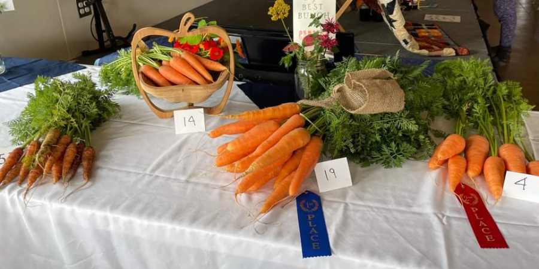
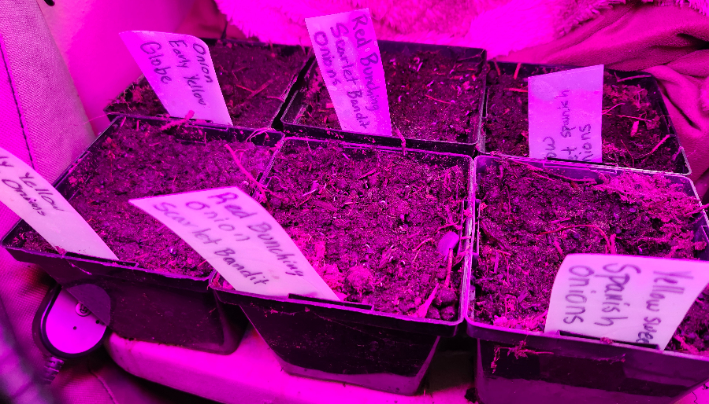

Fresh Quail Eggs
Fertile eggs - perfect for eating or hatching. Some eggs have rare celadon genetics for possible blue egg layers!
Hatching: Eggs in incubator Feb 1 → Hatch Feb 18 → Chicks available Mar 11
Year-Round Availability
Quail Chicks & Adults
Available: Chicks from March 11, Adults from last week of March 2026
March Availability
Announcing
Cultivating Food Sovereignty for Gustavus
2026 Workshop Series

Meat Rabbit Husbandry & Cage Building
August 2026Learn rabbit care from an ARBA member with 20 years experience as a rabbit breeder. Hands-on handling and collaborative cage building workshop.

Carrot Tasting
September 2026Third annual community carrot tasting. Past tastings: 2024 (6 varieties) → 2025 (17 varieties) → 2026 (14 varieties planned).
2025 Results - 17 Varieties
| Rank | Variety | Total | Score | Norm |
|---|---|---|---|---|
| 1 | Royal Chantenay | 24 | 94 | 3.92 |
| 2 | St. Valery | 25 | 95 | 3.80 |
| 3 | Purple Dragon | 23 | 82 | 3.57 |
| 4 | Gniff | 24 | 84 | 3.50 |
| 5 | Little Fingers | 25 | 87 | 3.48 |
| 6 | Bolero Nantes | 24 | 79 | 3.29 |
| 7 | Oxheart | 26 | 79 | 3.04 |
| 8 | Giant Red | 25 | 74 | 2.96 |
| 9 | Chantenay Red Core | 24 | 75 | 3.13 |
| 10 | Bambino | 22 | 60 | 2.73 |
| 11 | Imperator 58 | 25 | 62 | 2.48 |
| 12 | Seedra Scarlet Nantes | 24 | 56 | 2.33 |
| 13 | Scarlet Nantes | 26 | 52 | 2.00 |
| 14 | Lunar White | 25 | 48 | 1.92 |
| 15 | Solar Yellow | 22 | 41 | 1.86 |
| 16 | Black Nebula | 26 | 48 | 1.85 |
| 17 | Pusa Asita Black | 24 | 36 | 1.50 |
2024 Results - 6 Varieties
| Rank | Variety | Total | Score | Norm |
|---|---|---|---|---|
| 1 | Royal Chantenay | 10 | 41 | 4.10 |
| 2 | Bolero Nantes | 10 | 31 | 3.10 |
| 3 | Bambino | 10 | 31 | 3.10 |
| 4 | Scarlet Nantes | 11 | 33 | 3.00 |
| 5 | Yellow | 10 | 30 | 3.00 |
| 6 | Imperator 58 | 10 | 29 | 2.90 |

Rabbit & Poultry Show
September 2026Educational judged show with ribbons and family-friendly activities at the Gustavus Harvest Festival.
Featuring rabbits, poultry, and community celebration of local livestock. Part of the free annual Gustavus Harvest Festival.
Community Support: This workshop series receives financial support from the RurAL CAP Foundation.

Second Saturday Markets
Starting April 2026 at the Gustavus Second Saturday Markets.
Fresh seasonal produce, quail eggs, and homestead goods from our Gustavus garden.
Location: Gustavus Community Center
Season: April through October
🌱 Plant Starts Coming in April! 🌱
Vegetable and herb starts will be available in Gustavus starting April 2026
Perfect for your home garden — grown locally with care
